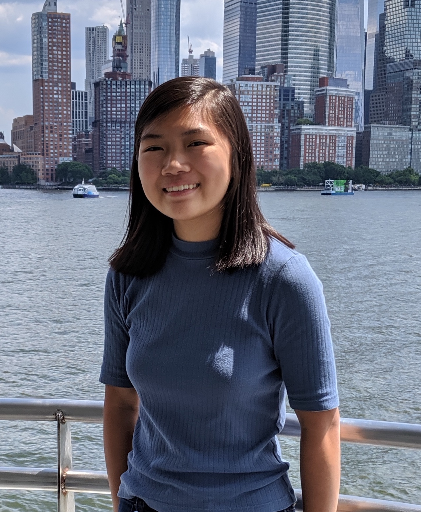

Amanda Xu

 ax49[at]cornell[dot]edu
ax49[at]cornell[dot]edu
 axu2017
axu2017
I am a computer scientist broadly interested in programming languages and formal methods. I received my B.S. in Computer Science from Cornell University in May 2020. As an undergraduate, I had the privilege of working on Petr4 with Nate Foster.
I am currently working in AWS Fraud Prevention as an SDE.
when will it be time
for normal life to return
anticipation